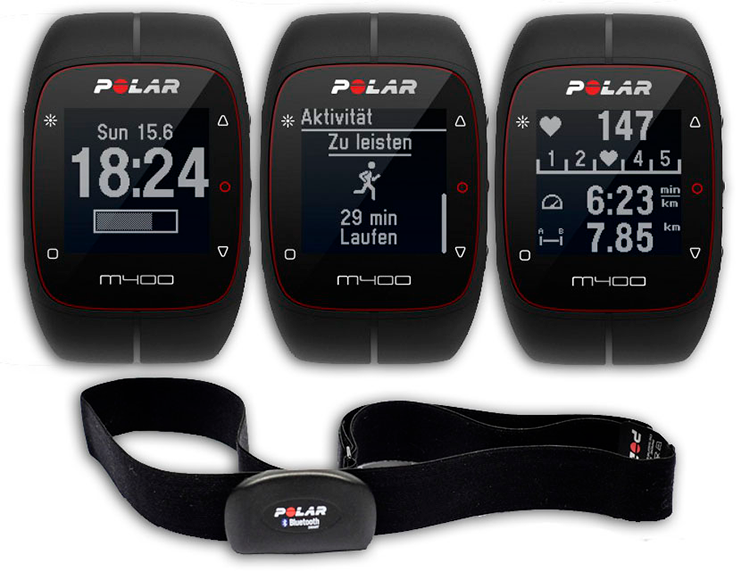

Официальный представитель
Garmin, Polar, Suunto
Подбор пульсометра
с учётом Вашего уровня подготовки
наши преймущества
Делимся опытом
Наши сотрудники всегда готовы поделиться своим опытом,
так как сами бегают полумарафоны, переплыли Босфор, готовятся к соревнованиям по триатлону!
Заботимся о здоровье
Мы работаем для того,
чтобы Ваши занятия спортом шли на пользу Вашему здоровью и были в радость Вам и Вашим
близким!
Учим бегать
Помогаем с обучением
правильной технике бега!
Дружим с крупнейшей школой бега в России - I LOVE RUNNING.
Получите бесплатную консультацию по подбору пульсометра
Просто заполните форму заявки
и мы перезвоним вам в течении 10 минут
и мы перезвоним вам в течении 10 минут



Каталог пульсометров
-
для фитнеса
-
для бега
-
для триатлона

- Вы услышите звуковое оповещение о нужном пульсе во время тренировки;
- Вы увидите информативный графический индикатор целевых тренировочных зон пульса;
- Также Вы увидите информацию о расходе калорий за тренировку;
- Вы сможете посмотреть данные по 10 тренировкам. назад
- Вы услышите звуковое оповещение о нужном пульсе во время тренировки;
- Вы увидите информативный графический индикатор целевых тренировочных зон пульса;
- Также Вы увидите информацию о расходе калорий за тренировку;
- Вы сможете посмотреть данные по 10 тренировкам. назад
- Вы услышите звуковое оповещение о нужном пульсе во время тренировки;
- Вы увидите информативный графический индикатор целевых тренировочных зон пульса;
- Также Вы увидите информацию о расходе калорий за тренировку;
- Вы сможете посмотреть данные по 10 тренировкам. назад
- Вы услышите звуковое оповещение о нужном пульсе во время тренировки;
- Вы увидите информативный графический индикатор целевых тренировочных зон пульса;
- Также Вы увидите информацию о расходе калорий за тренировку;
- Вы сможете посмотреть данные по 10 тренировкам. назад
- Вы услышите звуковое оповещение о нужном пульсе во время тренировки;
- Вы увидите информативный графический индикатор целевых тренировочных зон пульса;
- Также Вы увидите информацию о расходе калорий за тренировку;
- Вы сможете посмотреть данные по 10 тренировкам. назад
- Вы услышите звуковое оповещение о нужном пульсе во время тренировки;
- Вы увидите информативный графический индикатор целевых тренировочных зон пульса;
- Также Вы увидите информацию о расходе калорий за тренировку;
- Вы сможете посмотреть данные по 10 тренировкам. назад
- Вы услышите звуковое оповещение о нужном пульсе во время тренировки;
- Вы увидите информативный графический индикатор целевых тренировочных зон пульса;
- Также Вы увидите информацию о расходе калорий за тренировку;
- Вы сможете посмотреть данные по 10 тренировкам. назад
- Вы услышите звуковое оповещение о нужном пульсе во время тренировки;
- Вы увидите информативный графический индикатор целевых тренировочных зон пульса;
- Также Вы увидите информацию о расходе калорий за тренировку;
- Вы сможете посмотреть данные по 10 тренировкам. назад
- Вы услышите звуковое оповещение о нужном пульсе во время тренировки;
- Вы увидите информативный графический индикатор целевых тренировочных зон пульса;
- Также Вы увидите информацию о расходе калорий за тренировку;
- Вы сможете посмотреть данные по 10 тренировкам. назад
отзывы клиентов

Ирина Иванченко
2 полумарафона
Не знала, что себе купить - обратилась к ребятам из RunSmart - подобрали пульсометр,
который
подошёл именно под мои цели и финансовые возможности.
Через некоторое время решила обновить гаджет - не раздумывая обратилась туда же.
Новые цели - новый гаджет!
Спасибо, RunSmart!

Иван Сёмочкин
1 полумарафон
Крутая штука-пульсометр. Обычно без них бегал. Оказывается только хуже себе делал.
Купил пульсометр, ещё в подарок получил тренировку. Со мной вместе провели первую
тренировку, научили пользоваться новым гаджетом. Также объяснили основы анатомии,
составили
план тренировок на месяц вперёд.
С ними подготовился к своему первому полумарафону! Спасибо!!!

Юлия Дашкина
2 полумарафона
Долго не могла начать бегать, т.к. до этого несколько раз начинала, но становилось
тяжело и
я бросала. От друзей услышала о RunSmart и о беге с контролем пульса и решила
попробовать.
Позвонила, ребята поинтересовались моими целями и подобрали очень интересный вариант со
скидкой! Теперь бегаю и наслаждаюсь бегом! Пробежала уже 2 полумарафона и несколько
более
коротких забегов и не намерена останавливаться!
Спасибо!!!